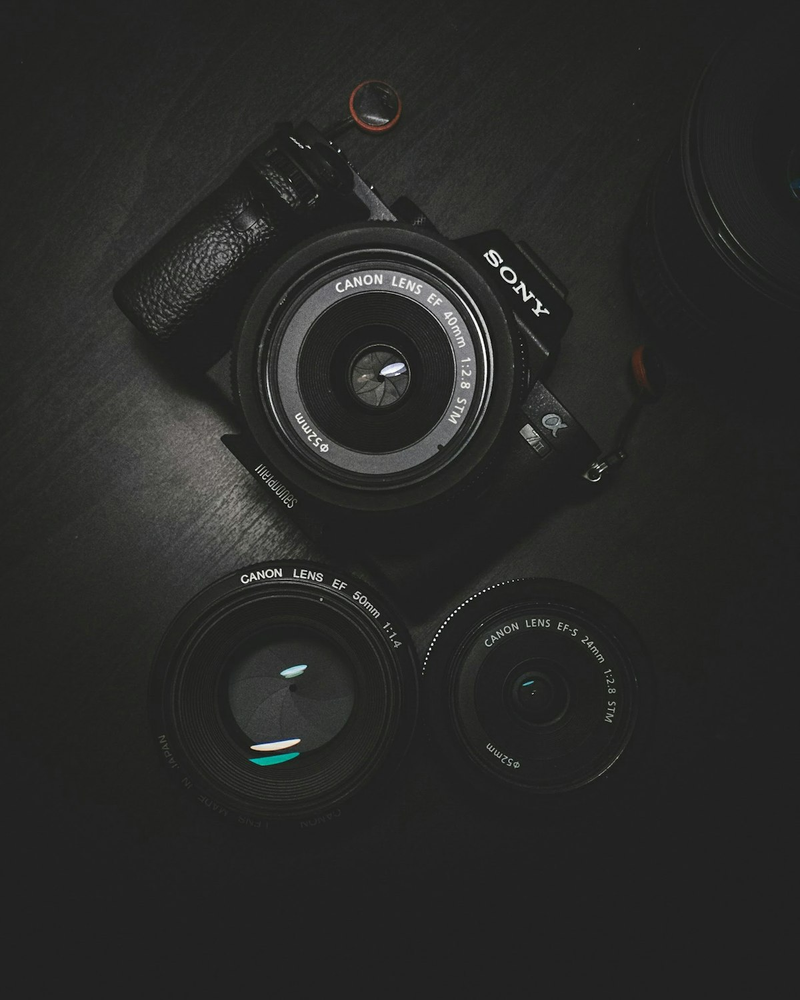

Estudio de fotografía y video en Texcoco: títulos, documentos, retratos, bodas y XV años con calidad profesional y precios accesibles.
Agendar por WhatsApp595 954 0979Capturamos cada momento con calidad profesional.
Fotografía oficial para titulación y generaciones.
Infantil, pasaporte, visa y credencial con entrega rápida.
Individuales, familiares y de pareja en estudio.
Paquetes de foto y video para tu gran día.
Videograbación de eventos y sesiones.
Imágenes para catálogo y redes sociales.

En Studio Azul llevamos más de una década haciendo fotografía y video en Texcoco: calidad que se nota en cada impresión, atención personalizada y paquetes para cada ocasión.
✔ Precios accesibles
✔ Entrega rápida
✔ Foto y video profesional
Calificación 4.3 ★ en Google
★★★★★
“Todas mis fotos son de aquí, me encanta la calidad de las fotos y son accesibles.”
— Cliente en Google★★★★★
“Muy rápido y a buen precio.”
— Cliente en Google★★★★★
“Excelente servicio y fotos de gran calidad para mi título. Muy recomendable.”
— Cliente en GoogleResolvemos tus dudas antes de tu sesión.
Depende del tipo de sesión o evento; escríbenos por WhatsApp y te enviamos paquetes y precios.
Escríbenos por WhatsApp o llámanos al 595 954 0979; te damos la primera fecha disponible.
Lunes a viernes: 10:00 – 19:00; Sábado: 10:00 – 18:00; Domingo: Cerrado.
Nezahualpilli 15, Mz 028, Col. Los Ahuehuetes / San Lorenzo, 56140 Texcoco de Mora, Edo. Méx. Usa «Cómo llegar» para abrir la ruta.
Las fotos instantáneas y de documentos pueden estar listas el mismo día, a veces en minutos; sesiones y eventos según paquete.
Sí, cubrimos todo tipo de eventos en Texcoco y alrededores. Pregunta por disponibilidad de fecha.
Las fotos para documentos y titulación se atienden sin cita en horario de estudio; para sesiones y eventos recomendamos agendar.
Efectivo y transferencia; pregunta por pago con tarjeta y paquetes de seguimiento.
📍 Dirección: Nezahualpilli 15, Mz 028, Col. Los Ahuehuetes / San Lorenzo, 56140 Texcoco de Mora, Edo. Méx.
📞 Teléfono: 595 954 0979
| Lunes a viernes | 10:00 – 19:00 |
| Sábado | 10:00 – 18:00 |
| Domingo | Cerrado |